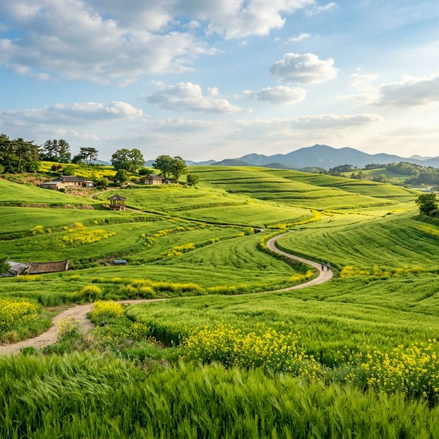
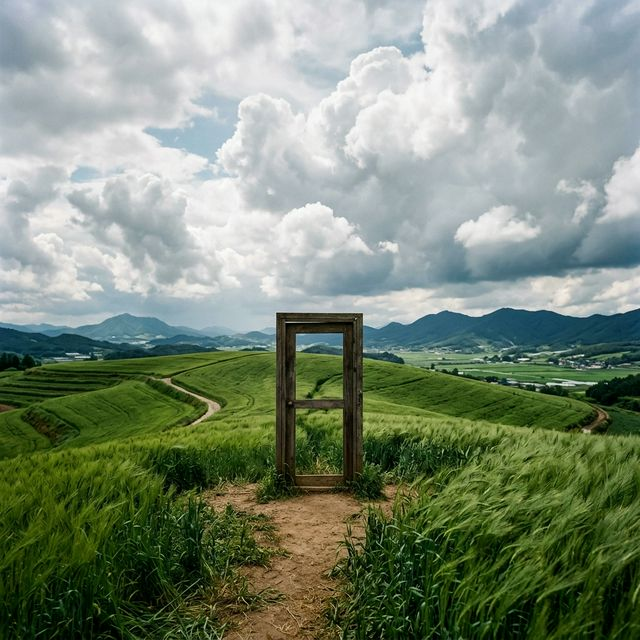
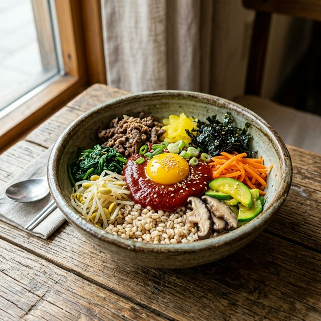

고창 청보리밭 축제 2026 개화 상태 및 인생샷 명당 도깨비 촬영지 주차 정보
끝없이 펼쳐진 지평선 아래, 연둣빛 물결이 바람을 타고 넘실거리는 장관을 상상해 보셨나요? 전북특별자치도 고창 청보리밭 축제 2026이 드디어 시작되었습니다. 2026년
4월 18일부터 5월 10일까지 열리는 이번 축제는, 대한민국 경관 농업의 시초라 불리는 공음면 학원농장 일대를 배경으로 펼쳐집니다. 드라마 '도깨비'의 주인공들이 시공간을 넘나들던 그 신비로운 문과
메밀꽃 대신 자리 잡은 청명한 보리의 초록 물결은 일상에 지친 우리에게 압도적인 시각적 휴식을 선사합니다. 올해로 제23회를 맞이하며 더욱 풍성해진 프로그램과 인생 사진을 남길 수 있는 숨은 포인트,
그리고 쾌적한 관람을 위한 주차 꿀팁까지 고창 나들이의 모든 것을 담아 전해드립니다.
1. 초록의 바다, 고창 청보리밭의 압도적인 스케일
고창 학원농장의 청보리밭은 약 100만㎡(약 30만 평)라는 어마어마한 규모를 자랑합니다. 발길이 닿는 곳마다 끝이 보이지 않는 초록빛 파도가 이어지는데, 이는 인공적으로
만들어진 정원과는 비교할 수 없는 대자연의 경이로움을 느끼게 합니다. 완만한 구릉지를 따라 심어진 보리들은 바람이 불 때마다 일제히 몸을 눕히며 사각거리는 소리를 내는데, 이 소리는 청각적으로도 매우 치유적인
경험을 선사합니다.
단순히 보리만 심어진 것이 아니라, 보리밭 사이사이 심어진 노란 유채꽃과 조화를 이루어 봄의 색채 대비를 극명하게 보여줍니다. 이 광활한 대지가 주는 개방감은 도시의 답답함을 한순간에 잊게 하기에 충분합니다.
보리는 4월 초부터 자라나기 시작해 4월 말이면 어른 무릎 높이까지 훌쩍 크는데, 이때가 가장 싱그러운 연둣빛을 띠는 시기입니다. 자연이 빚어낸 이 아름다운 캔버스 위를 걷는 것만으로도 올봄 최고의 힐링을
경험하실 수 있을 것입니다.

지평선 너머까지 펼쳐진 광활한 청보리밭의 싱그러운 초록 물결 - AI 제작 이미지
2. 2026년 고창 청보리밭 축제 일정 및 입장 안내
올해 축제는 2026년 4월 18일(토)부터 5월 10일(일)까지 23일간 진행됩니다. 작년보다 따뜻한 기온 덕분에 보리의 생장 상태가 매우 좋아 개막 초기부터 풍성한 경관을
감상할 수 있습니다. 축제 주제인 '봄의 기억, 길 위에 남다'에 맞춰 방문객들이 직접 밭 사이를 걸으며 추억을 남길 수 있는 체험 코스가 대폭 강화되었습니다.
학원농장 자체 입장료는 무료이지만, 보리밭 한가운데 조성된 전용 산책로인 '사잇길 걷기' 체험을 위해서는 3,000원의 체험료가 발생할 수 있습니다. 이는 농장을 유지하고 관리하는 데 사용되는 비용으로,
고창군민은 무료로 이용 가능합니다. 축제 운영 시간은 보통 오전 9시부터 오후 6시까지이지만, 노을이 지는 황금 시간에 맞춰 방문하시면 보리밭이 오렌지색으로 물드는 절경을 볼 수 있으니 참고하시기 바랍니다.
대규모 인파가 몰리는 주말보다는 평일 오전을 이용하시는 것이 여유로운 관람의 핵심입니다.
3. 드디어 만나는 '도깨비' 촬영지: 장식 없는 문과 원두막
고창 청보리밭을 유명하게 만든 일등 공신 중 하나는 바로 드라마 '도깨비'입니다. 공유와 김고은이 문을 열고 나오던 그 신비로운 장소와 두 주인공이 결혼식을 올리던 원두막이 이곳 학원농장에 그대로 보존되어
있습니다. 도깨비 문은 보리밭 구릉 정상 부근에 위치해 있는데, 아무것도 없는 밭 위에 덩그러니 놓인 이 문은 마치 다른 세계로 연결될 것만 같은 환상적인 분위기를
자아냅니다.
많은 관광객이 이 문 앞에서 줄을 서서 사진을 찍지만, 조금만 시야를 넓히면 문 주변의 보리밭 곡선과 하늘이 어우러지는 더 멋진 구도를 찾을 수 있습니다. 또한, 드라마에서 보았던 하얀 메밀꽃은 가을 시즌의
풍경이지만, 봄날의 청보리와 어우러지는 원두막의 풍경 역시 정겹고 평온합니다. 이곳에 서 있으면 바람에 실려 오는 보리 내음과 함께 드라마 속 명대사들이 들려오는 듯한 착각에 빠지게 됩니다. 팬이라면 놓쳐서는
안 될 성지 순례 코스이며, 팬이 아니더라도 최고의 인스타그램 명당임이 분명합니다.
4. 2026년 실시간 개화 현황 및 베스트 방문 시기
고창 청보리의 절정은 보통 4월 25일부터 5월 5일 어린이날 전후까지입니다. 4월 20일 현재, 보리들은 이미 선명한 초록색을 띠고 있으며 키도 상당히 자라나 밭의 흙이 거의
보이지 않을 정도로 빽빽한 상태입니다. 보리밭 사이사이에 심어진 유채꽃은 현재 만개하여 초록과 노랑의 조화가 정점에 달해 있습니다.
5월 중순으로 넘어가면 보리가 익기 시작하면서 초록빛이 아닌 누런색으로 변하기 때문에, 가장 싱그러운 느낌을 원하신다면 4월 말 방문을 강력 추천합니다. 다만, 올해는 기온 변화가 잦아 개화 속도가 유동적일
수 있으니 출발 전 인스타그램의 '고창청보리밭' 실시간 태그나 고창군 공식 홈페이지의 공지사항을 확인하는 것이 좋습니다. 비가 온 직후에는 보리잎에 맺힌 물방울이 햇살에 반짝이며 더욱 신비로운 분위기를
연출하니, 흐린 날이라고 해서 너무 실망하지 않으셔도 됩니다.
| 축제 기간 |
2026. 04. 18(토) ~ 05. 10(일) |
| 장소 |
고창 학원관광농장 일원 |
| 주차 |
학원농장 메인 주차장 (무료 운영) |
| 핵심 포인트 |
도깨비 촬영지(문, 원두막), 트랙터 마차 체험 |
5. 주차 명당 및 교통 체증 피하는 전략
축제장 입구인 학원농장 메인 주차장은 약 수백 대의 차량을 수용할 수 있지만, 주말 점심시간 이후에는 진입로 자체가 거대한 주차장으로 변합니다. 이를 피하기 위한 가장 좋은 방법은 오전 9시
이전 도착입니다. 일찍 도착하면 농장과 가장 가까운 1주차장에 주차할 수 있어 이동 동선이 매우 짧아집니다.
만약 메인 주차장이 만차라면 안내 요원의 지시에 따라 보조 주차장으로 이동해야 하는데, 이곳은 행사장과 거리가 조금 있을 수 있습니다. 이때는 무리하게 차를 끌고 올라가기보다는 하단 주차장에 차를 대고
셔틀버스를 이용하는 것이 시간을 아끼는 길입니다. 고창 터미널에서 행사장까지 운행하는 임시 셔틀버스도 정기적으로 운행되니 대중교통을 이용해 가벼운 마음으로 나들이를 즐기시는 것도 추천합니다. 주차 후에는
먼지가 날릴 수 있는 흙길이 많으므로 고가의 차량보다는 실용적인 차량을 이용하시고, 차량 내부의 귀중품 관리에도 유의하시기 바랍니다.

드라마 '도깨비'의 한 장면을 떠올리게 하는 보리밭 언덕 위 신비로운 문 - AI 제작 이미지
6. 보리밭에서 즐기는 미식: 보리 비빔밥과 보리 아이스크림
나들이의 완성은 역시 먹거리입니다. 학원농장 내 식당과 주변의 임시 먹거리 장터에서는 고창 보리를 활용한 다양한 음식을 맛볼 수 있습니다. 가장 인기 있는 메뉴는 단연 고창 보리
비빔밥입니다. 갓 수확한 싱싱한 나물들과 함께 톡톡 터지는 보리밥의 식감은 입안 가득 고창의 자연을 담아냅니다. 여기에 곁들여지는 된장찌개의 구수한 맛은 일품입니다.
식사 후 디저트로는 보리로 만든 미숫가루나 청보리 아이스크림을 강력 추천합니다. 고소하면서도 뒷맛이 깔끔한 아이스크림은 넓은 밭을 걷느라 지친 방문객들에게 최고의 당 충전원이
됩니다. 또한, 고창의 특산물인 복분자와 수박을 활용한 음료들도 축제장에서 만나볼 수 있어 미식가들의 입을 즐겁게 합니다. 현장의 먹거리 부스들은 가격 표시제를 실시하여 바가지 요금 걱정 없이 즐길 수 있도록
운영되고 있으니 안심하고 고창의 맛을 체험해 보시기 바랍니다.
7. 사진 작가가 알려주는 보리밭 인생 사진 구도
광활한 보리밭에서 인물을 돋보이게 찍는 법은 낮은 앵글을 활용하는 것입니다. 카메라 렌즈를 보리 키 높이까지 낮춰서 촬영하면, 앞쪽의 보리들이 자연스러운 보케(흐림) 효과를 주어
더욱 몽환적인 사진이 됩니다. 이때 흰색이나 파스텔 톤의 원피스를 입으면 초록색 배경과 대비되어 인물이 더욱 선명하게 부각됩니다.
또한, 구릉지의 곡선을 활용해 구도를 잡으면 사진에 깊이감이 생깁니다. 사람이 다니는 길 위에 인물을 세우고 보리밭 너머의 지평선이 어깨선에 걸치지 않도록 주의해서 찍어보세요. 햇살이 강한 정오보다는 해가
뉘엿뉘엿 지기 시작할 무렵의 역광을 이용하면 보리 이삭마다 금빛 테두리가 생기며 환상적인 분위기를 연출할 수 있습니다. 스마트폰으로 찍는다면 인물 사진 모드의 배경 흐림 효과를 한두 단계 높여서 찍는 것이
팁입니다. 고창의 바람에 흩날리는 머리카락과 보리 물결을 한 프레임에 담아보세요.

건강한 고창의 보리가 듬뿍 들어간 정갈하고 맛깔스러운 보리 비빔밥 - AI 제작 이미지
8. 주변 연계 관광지: 고창읍성부터 선운사까지
고창까지 갔다면 청보리밭만 보고 오기엔 아쉽습니다. 차로 약 20~30분 거리에 있는 고창읍성(모양성)은 답성 놀이라는 독특한 전통이 있는 곳으로, 성곽 위를 걸으며 내려다보는
고창 시내의 풍경이 아름답습니다. 특히 봄철에는 성곽 주변의 철쭉이 만개하여 학원농장과는 또 다른 컬러풀한 매력을 선보입니다.
또한, 천년 고찰 선운사로 향하는 길은 사계절 내내 아름답기로 유명합니다. 선운사 입구의 산책로는 계곡물 소리와 함께 신성한 공기를 마실 수 있어 명상하듯 걷기 좋습니다.
아이들과 함께라면 유네스코 세계문화유산인 '고창 고인돌 유적지'를 방문해 거대한 선사시대의 흔적을 직접 확인해 보시는 것도 추천합니다. 고창은 전체가 하나의 지질공원이라 할 만큼 자연 유산이 풍부한 곳이므로,
1박 2일 일정으로 여유롭게 탐방하시는 것이 가장 좋습니다.
9. 2026 고창 나들이를 위한 최종 체크리스트
완벽한 관람을 위해 몇 가지 준비물을 챙겨보세요. 넓은 밭을 2~3시간 동안 걸어야 하므로 편안한 운동화는 필수이며, 그늘이 거의 없기 때문에 모자나 양산, 선글라스를 지참하시는
것이 좋습니다. 또한 평지보다 바람이 강하게 불 수 있어 얇은 바람막이나 셔츠 한 장을 챙기면 체온 조절에 도움이 됩니다.
휴대용 생수 한 병을 미리 준비하고, 쓰레기를 되담아 올 수 있는 작은 봉투 하나도 센스 있게 챙겨주세요. 학원농장은 사유지를 일반인들에게 무료로 개방하는 곳인 만큼, 보리밭 안으로 함부로 들어가 보리를
훼손하는 행위는 절대로 삼가야 합니다. 정해진 산책로만 이용해도 충분히 멋진 사진을 찍을 수 있다는 점을 명심하고, 우리 모두 수준 높은 관람 문화를 보여줍시다. 2026년의 봄, 고창의 초록 물결 속에서
잊지 못할 추억의 한 페이지를 새겨보시길 바랍니다.
#고창청보리밭축제
#2026고창축제
#학원농장
#도깨비촬영지
#청보리밭개화시기
#고창가볼만한곳
#봄축제추천
#인생사진명당
#고창맛집
#전북여행